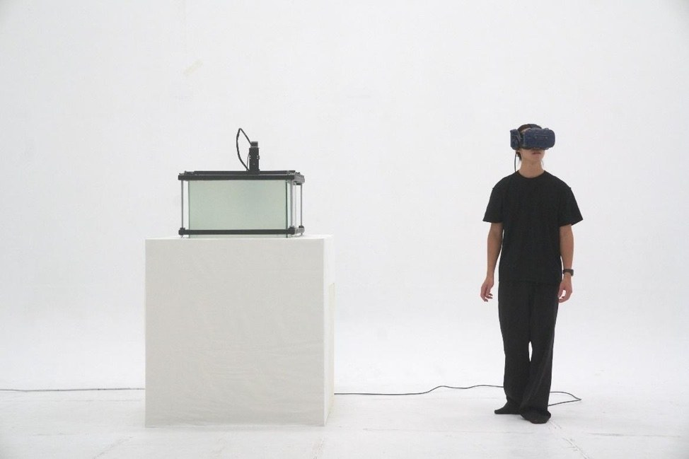

HAO-MIN HUANG / SELECTED WORK
The PetriDishSelected work

Wearing a VR headset, participants see from inside the installation, with their viewpoint following their bodily movements. When its glass becomes transparent and they see themselves outside, the separation of body and consciousness becomes an opportunity to reconsider the self.
- Artists
- Hao-Min Huang
- Materials
- Virtual reality, 360-degree live video, mechanical installation